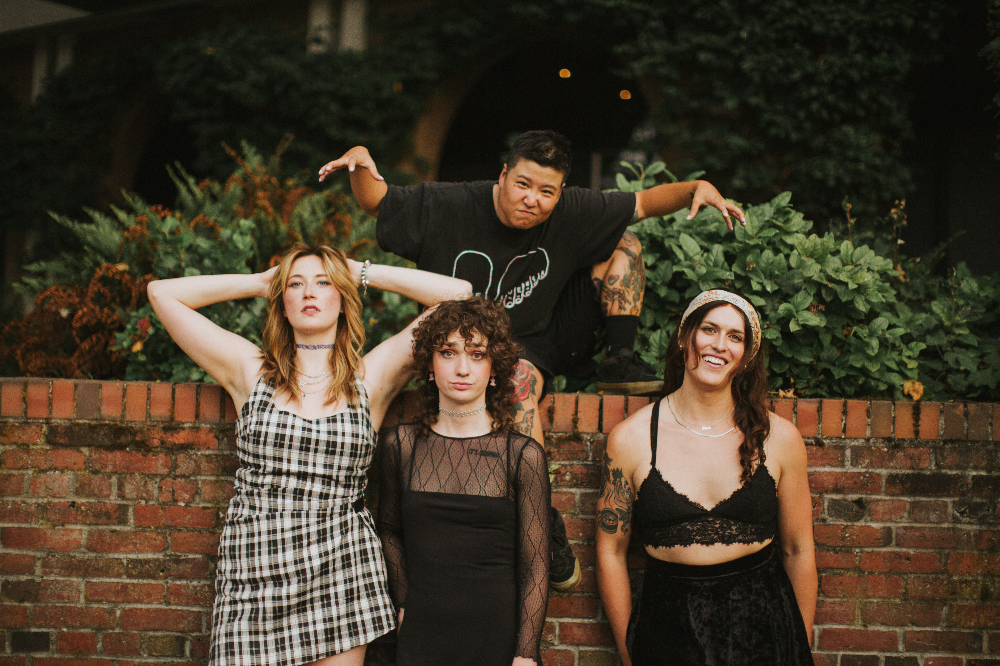
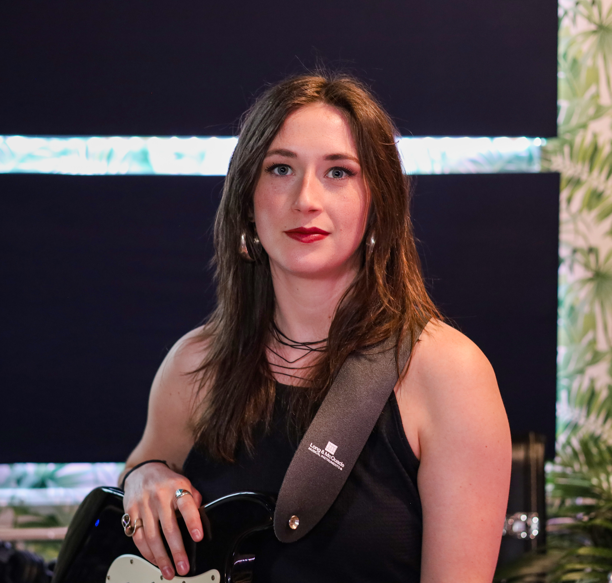
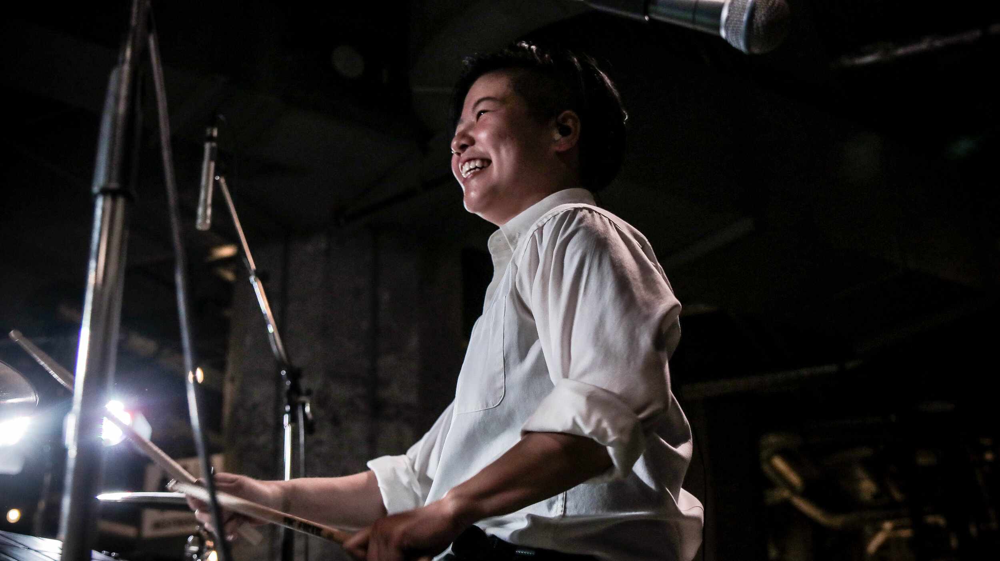
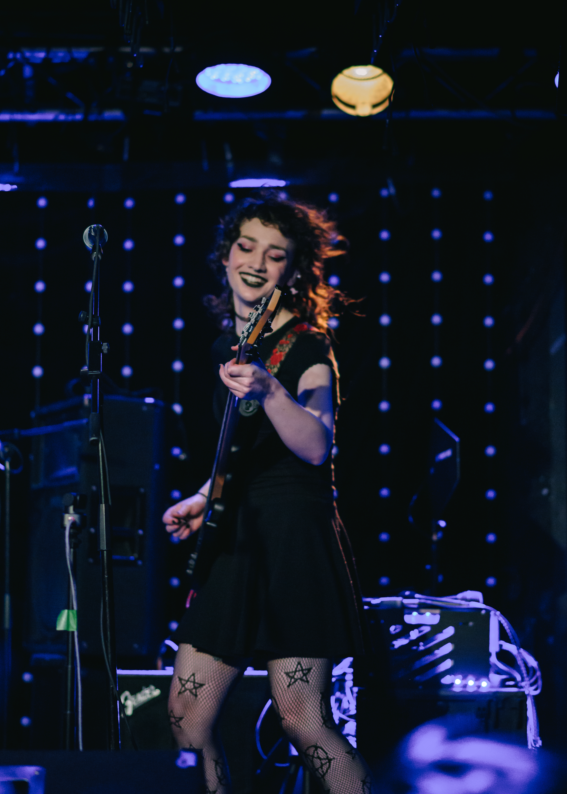

About Fembite
Hailing from a planet where girls are tall and boys are small, Fembite enters your orbit like a caffeinated crash out. With fast beats, high octane guitar solos, and cheeky lyrics, these girlies (past or present) are turning their gender trauma into silly little anthems.
Led by Lauren Odds, Fembite is Victoria’s explosive new emo-pop band. At 30 years old, with no guitar skills or music industry experience, Lauren decided to become a pop star. She signed up for guitar and singing lessons, and began aggressively chasing her dream. After writing countless songs, she connected with Vancouver based producer Salil Verma (Sound of Kalima) for her first recordings. Her debut single was Eye Level, a tongue in cheek response to the male belittlement she experienced as a 6’0” tall woman. Thus Lauren Odds was introduced as a songwriter who expresses personal and societal frustrations with sardonic playfulness.
“Some people in my life were confused. They didn’t understand what would make me, a 30 year-old woman and beginner guitar player, want to go up on coffee shop stages and perform emo-pop. I just laughed and said ‘I guess I’m just addicted to failing publicly.'”
This fearless attitude is what caught the attention of local instructor and sound engineer Ariel Tseng, owner of Drum It Studios.
“I saw this woman on my feed who was releasing music while actively learning how to play guitar. Legitimately and vulnerably being a beginner and not afraid to show it. Here was a person who executed her ideas first, and figured out the steps after. The audacity was staggering, and I wanted to be a part of it.”
The two found Sienna Waibel (lead guitar) and Audrey Traynor (bass) and formed Fembite. The team began studying bands like Billy Talent and Paramore alongside pop icons like Dua Lipa, creating a hybrid of guitar-driven riffs, pop melodies, and raw emo attitude. They are currently in the studio recording their first single after selling out their debut show in Victoria BC. Fembite is proof that dedication, fearlessness, and a little chaos can create something remarkable.

Meet the Band

Lauren Odds – Lead Vocals & Rhythm Guitar

Ariel Tseng – Drums

Sienna Waibel – Lead Guitar
